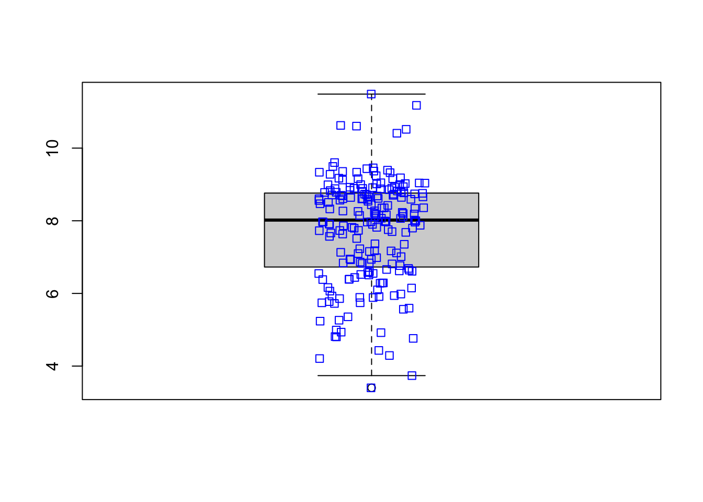
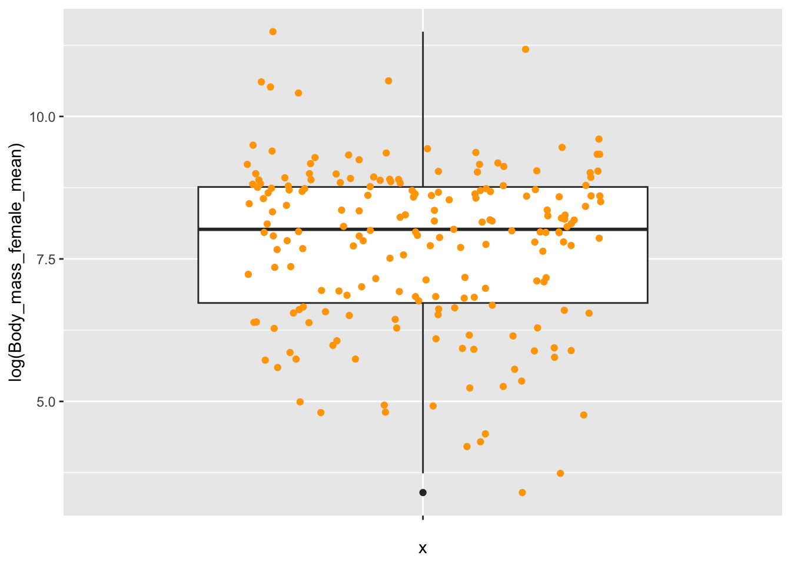
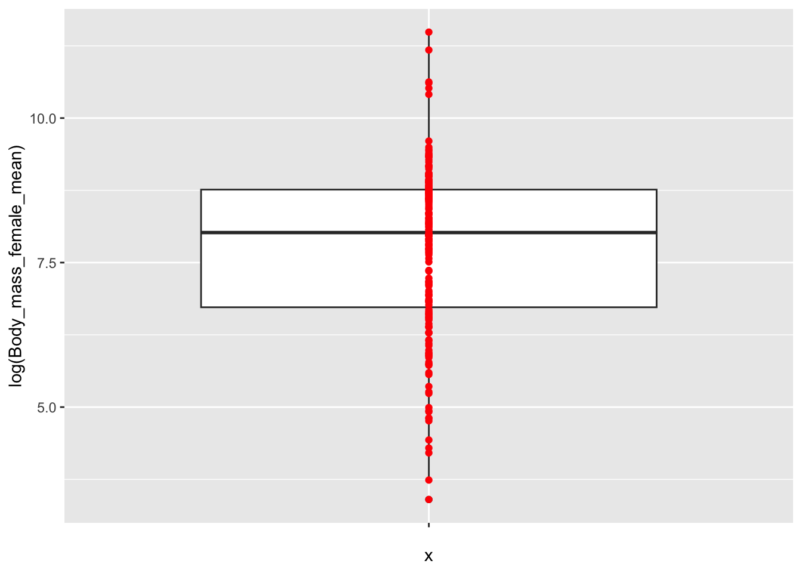
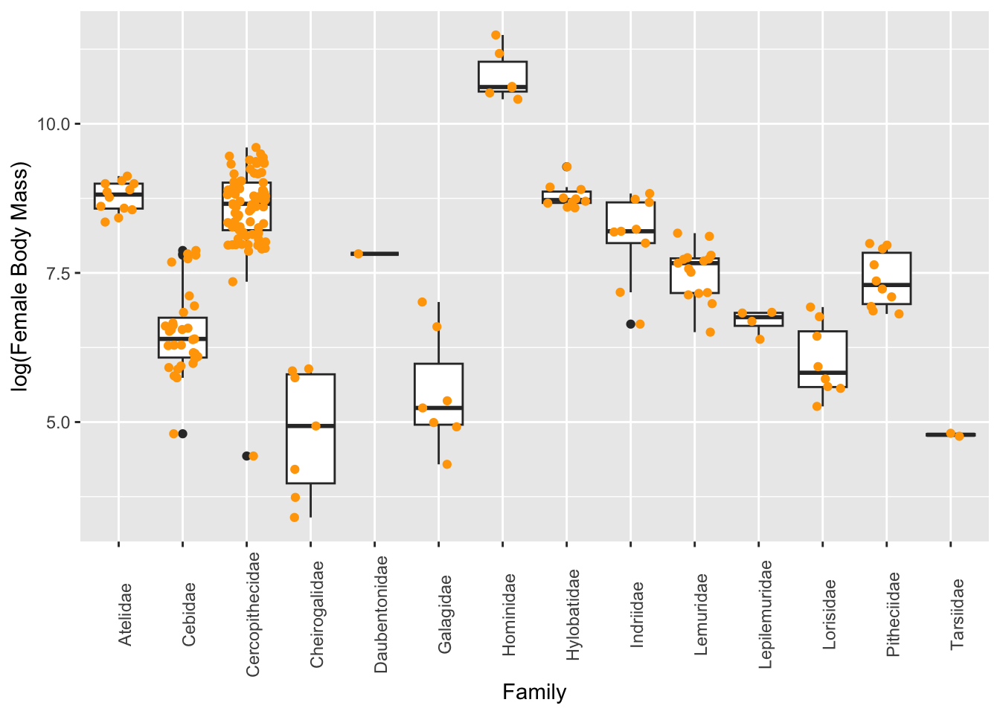

library(tidyverse)
v<-1:10
v<-c(1:10)
m<-matrix(1:30, nrow=5,ncol=6, byrow=TRUE)
#default version fills matrix column wise
a<-array(data=1:90, dim=c(5,6,3))
a<-array(c(1:80, rep(NA,10)), dim=c(5,6,3))data_wrangler
Quarto
Quarto enables you to weave together content and executable code into a finished document. To learn more about Quarto see https://quarto.org.
Running Code
Notes from the week 3 (end of January), spring semester 2025 ADA!
#array can be n dimensional #fill the array with caution, it repeats the element as vectors
class(a)[1] "array"dim(a)[1] 5 6 3attributes(a)$dim
[1] 5 6 3#matrix[row, column]
m[2:4, 3:5] [,1] [,2] [,3]
[1,] 9 10 11
[2,] 15 16 17
[3,] 21 22 23a[1,,1][1] 1 6 11 16 21 26a[,,1] [,1] [,2] [,3] [,4] [,5] [,6]
[1,] 1 6 11 16 21 26
[2,] 2 7 12 17 22 27
[3,] 3 8 13 18 23 28
[4,] 4 9 14 19 24 29
[5,] 5 10 15 20 25 30s<-c("this","is","life")
m<-matrix(1:40, nrow=8, ncol =5)
b<-FALSE
class(b)[1] "logical"l<-list(s,m,b)
l<-list(string=s, matrix =m, bool = b)
l[[2]][2:4, 3:5] [,1] [,2] [,3]
[1,] 18 26 34
[2,] 19 27 35
[3,] 20 28 36l$string
[1] "this" "is" "life"
$matrix
[,1] [,2] [,3] [,4] [,5]
[1,] 1 9 17 25 33
[2,] 2 10 18 26 34
[3,] 3 11 19 27 35
[4,] 4 12 20 28 36
[5,] 5 13 21 29 37
[6,] 6 14 22 30 38
[7,] 7 15 23 31 39
[8,] 8 16 24 32 40
$bool
[1] FALSEdf<-data.frame(firstName=c("Rick","Negan","Dwight"),
community=c("Alexiandria","Saviors","Hilltop"),
sex=c("M","M","F"),
age=c(42,40,28))
df[["firstName"]][1] "Rick" "Negan" "Dwight"#d6<-read_excel(f,sheet="Sheet1", col_names =TRUE)
#glimpse(d6)->dataframe -consist of rows and columns, everything in the column should be the same type ->list can have bundle of type variables
f <-"/Users/madinaseidualy/Desktop/Data_Analyses/Country-Data-2016.csv"
#f<-"https://raw.githubusercontent.com/difiore/ada-datasets/refs/heads/main/Country-Data-2016.csv"
df<-read_csv(f, col_names=TRUE)
#structure(df)
#df <- as.data.frame(df) #from tibble to dataframe
#d<-as_tibble(df) #converting back to tibble
#glimpse(df)
#df[["country"]]
colnames(df) [1] "country" "population" "area" "govt_form"
[5] "birthrate" "deathrate" "life_expect" "mammals"
[9] "birds" "reptiles" "amphibians" "fishes"
[13] "mollucs" "other_inverts" "plants" "fungi_protists"#df$area
m<-median(df$population, na.rm=TRUE)
m[1] 4911766ma<-median(df$area, na.rm=TRUE)
ma[1] 69700df[["density"]] <-df$population/df$area
colnames(df) [1] "country" "population" "area" "govt_form"
[5] "birthrate" "deathrate" "life_expect" "mammals"
[9] "birds" "reptiles" "amphibians" "fishes"
[13] "mollucs" "other_inverts" "plants" "fungi_protists"
[17] "density" v <-sort(df$density, decreasing = TRUE)
arr <- arrange(df, desc(density))
arr# A tibble: 248 × 17
country population area govt_form birthrate deathrate life_expect mammals
<chr> <dbl> <dbl> <chr> <dbl> <dbl> <dbl> <dbl>
1 Macau 592731 28 special … 8.9 4.2 84.5 0
2 Monaco 30535 2 constitu… 6.7 9.2 89.5 3
3 Holy See… 842 0.1 monarchy NA NA NA 1
4 Singapore 5674472 697 republic 8.3 3.4 84.7 13
5 Hong Kong 7141106 1108 special … 9.2 7.1 82.9 3
6 Gibraltar 29258 7 British … 14.1 8.4 79.3 4
7 Bahrain 1346613 760 constitu… 13.7 2.7 78.7 3
8 Maldives 393253 298 republic 15.8 3.9 75.4 2
9 Malta 413965 316 republic 10.2 9.1 80.2 2
10 Bermuda 70196 54 British … 11.3 8.2 81.2 4
# ℹ 238 more rows
# ℹ 9 more variables: birds <dbl>, reptiles <dbl>, amphibians <dbl>,
# fishes <dbl>, mollucs <dbl>, other_inverts <dbl>, plants <dbl>,
# fungi_protists <dbl>, density <dbl>d <- df %>%
arrange(desc(density))
tail(d,10)# A tibble: 10 × 17
country population area govt_form birthrate deathrate life_expect mammals
<chr> <dbl> <dbl> <chr> <dbl> <dbl> <dbl> <dbl>
1 Pitcair… 48 4.7 e1 British … NA NA NA 1
2 Falklan… 3361 1.22e4 British … NA NA NA 4
3 Greenla… 57733 2.17e6 autonomo… 14.5 8.5 72.1 9
4 South G… 30 3.90e3 British … NA NA NA 3
5 Antarct… NA 1.4 e7 foreign-… NA NA NA 2
6 Bouvet … NA 4.9 e1 territor… NA NA NA 1
7 British… NA 5.44e4 British … NA NA NA 0
8 French … NA 4.40e5 overseas… NA NA NA 3
9 Heard I… NA 4.12e2 territor… NA NA NA 1
10 United … NA NA <NA> NA NA NA 0
# ℹ 9 more variables: birds <dbl>, reptiles <dbl>, amphibians <dbl>,
# fishes <dbl>, mollucs <dbl>, other_inverts <dbl>, plants <dbl>,
# fungi_protists <dbl>, density <dbl>head(d,10)# A tibble: 10 × 17
country population area govt_form birthrate deathrate life_expect mammals
<chr> <dbl> <dbl> <chr> <dbl> <dbl> <dbl> <dbl>
1 Macau 592731 28 special … 8.9 4.2 84.5 0
2 Monaco 30535 2 constitu… 6.7 9.2 89.5 3
3 Holy See… 842 0.1 monarchy NA NA NA 1
4 Singapore 5674472 697 republic 8.3 3.4 84.7 13
5 Hong Kong 7141106 1108 special … 9.2 7.1 82.9 3
6 Gibraltar 29258 7 British … 14.1 8.4 79.3 4
7 Bahrain 1346613 760 constitu… 13.7 2.7 78.7 3
8 Maldives 393253 298 republic 15.8 3.9 75.4 2
9 Malta 413965 316 republic 10.2 9.1 80.2 2
10 Bermuda 70196 54 British … 11.3 8.2 81.2 4
# ℹ 9 more variables: birds <dbl>, reptiles <dbl>, amphibians <dbl>,
# fishes <dbl>, mollucs <dbl>, other_inverts <dbl>, plants <dbl>,
# fungi_protists <dbl>, density <dbl>read_csv - reads as tibble; extracts column as tabular data structure; adds functionality read.csv - converts strings to the factors? read.csv do funciton behind, reads as dataframe and when you extract column it reads as whole vector???
f<-"https://raw.githubusercontent.com/difiore/ada-datasets/refs/heads/main/KamilarAndCooperData.csv"
d<-read_csv(f, col_names = TRUE)Rows: 213 Columns: 44
── Column specification ────────────────────────────────────────────────────────
Delimiter: ","
chr (16): Scientific_Name, Family, Genus, Species, Brain_size_Ref, Mass_Ref,...
dbl (28): Brain_Size_Species_Mean, Brain_Size_Female_Mean, Body_mass_male_me...
ℹ Use `spec()` to retrieve the full column specification for this data.
ℹ Specify the column types or set `show_col_types = FALSE` to quiet this message.#glimpse(d)
names(d) [1] "Scientific_Name" "Family"
[3] "Genus" "Species"
[5] "Brain_Size_Species_Mean" "Brain_Size_Female_Mean"
[7] "Brain_size_Ref" "Body_mass_male_mean"
[9] "Body_mass_female_mean" "Mass_Dimorphism"
[11] "Mass_Ref" "MeanGroupSize"
[13] "AdultMales" "AdultFemale"
[15] "AdultSexRatio" "Social_Organization_Ref"
[17] "InterbirthInterval_d" "Gestation"
[19] "WeaningAge_d" "MaxLongevity_m"
[21] "LitterSz" "Life_History_Ref"
[23] "GR_MidRangeLat_dd" "Precip_Mean_mm"
[25] "Temp_Mean_degC" "AET_Mean_mm"
[27] "PET_Mean_mm" "Climate_Ref"
[29] "HomeRange_km2" "HomeRangeRef"
[31] "DayLength_km" "DayLengthRef"
[33] "Territoriality" "Fruit"
[35] "Leaves" "Fauna"
[37] "DietRef1" "Canine_Dimorphism"
[39] "Canine_Dimorphism_Ref" "Feed"
[41] "Move" "Rest"
[43] "Social" "Activity_Budget_Ref" colnames(d) [1] "Scientific_Name" "Family"
[3] "Genus" "Species"
[5] "Brain_Size_Species_Mean" "Brain_Size_Female_Mean"
[7] "Brain_size_Ref" "Body_mass_male_mean"
[9] "Body_mass_female_mean" "Mass_Dimorphism"
[11] "Mass_Ref" "MeanGroupSize"
[13] "AdultMales" "AdultFemale"
[15] "AdultSexRatio" "Social_Organization_Ref"
[17] "InterbirthInterval_d" "Gestation"
[19] "WeaningAge_d" "MaxLongevity_m"
[21] "LitterSz" "Life_History_Ref"
[23] "GR_MidRangeLat_dd" "Precip_Mean_mm"
[25] "Temp_Mean_degC" "AET_Mean_mm"
[27] "PET_Mean_mm" "Climate_Ref"
[29] "HomeRange_km2" "HomeRangeRef"
[31] "DayLength_km" "DayLengthRef"
[33] "Territoriality" "Fruit"
[35] "Leaves" "Fauna"
[37] "DietRef1" "Canine_Dimorphism"
[39] "Canine_Dimorphism_Ref" "Feed"
[41] "Move" "Rest"
[43] "Social" "Activity_Budget_Ref" attach(d)
mean(LitterSz, na.rm = TRUE)[1] 1.180542##when attaching : in function you dont specify the dataframe
detach(d)
with (d, mean(LitterSz, na.rm = TRUE))[1] 1.180542##ways of specifying differently
summary(d) Scientific_Name Family Genus Species
Length:213 Length:213 Length:213 Length:213
Class :character Class :character Class :character Class :character
Mode :character Mode :character Mode :character Mode :character
Brain_Size_Species_Mean Brain_Size_Female_Mean Brain_size_Ref
Min. : 1.63 Min. : 1.66 Length:213
1st Qu.: 13.95 1st Qu.: 13.23 Class :character
Median : 61.45 Median : 57.20 Mode :character
Mean : 68.11 Mean : 65.24
3rd Qu.: 88.48 3rd Qu.: 86.80
Max. :491.27 Max. :480.15
NA's :42 NA's :48
Body_mass_male_mean Body_mass_female_mean Mass_Dimorphism Mass_Ref
Min. : 31 Min. : 30.0 Min. :0.841 Length:213
1st Qu.: 865 1st Qu.: 835.5 1st Qu.:1.013 Class :character
Median : 4290 Median : 3039.0 Median :1.109 Mode :character
Mean : 8112 Mean : 5396.5 Mean :1.246
3rd Qu.: 7815 3rd Qu.: 6390.0 3rd Qu.:1.409
Max. :170400 Max. :97500.0 Max. :2.688
NA's :18 NA's :18 NA's :18
MeanGroupSize AdultMales AdultFemale AdultSexRatio
Min. : 1.00 Min. : 0.900 Min. : 1.000 Min. : 0.500
1st Qu.: 4.00 1st Qu.: 1.000 1st Qu.: 1.000 1st Qu.: 1.000
Median : 7.80 Median : 1.500 Median : 2.900 Median : 1.450
Mean :15.06 Mean : 2.516 Mean : 5.049 Mean : 2.305
3rd Qu.:18.50 3rd Qu.: 3.100 3rd Qu.: 7.100 3rd Qu.: 2.770
Max. :90.00 Max. :16.000 Max. :25.200 Max. :15.600
NA's :60 NA's :68 NA's :68 NA's :84
Social_Organization_Ref InterbirthInterval_d Gestation WeaningAge_d
Length:213 Min. : 144.5 Min. : 59.99 Min. : 40.0
Class :character 1st Qu.: 365.0 1st Qu.:142.00 1st Qu.: 122.4
Mode :character Median : 476.9 Median :165.04 Median : 237.7
Mean : 572.1 Mean :163.47 Mean : 310.0
3rd Qu.: 741.4 3rd Qu.:180.75 3rd Qu.: 383.4
Max. :2007.5 Max. :256.00 Max. :1260.8
NA's :103 NA's :75 NA's :95
MaxLongevity_m LitterSz Life_History_Ref GR_MidRangeLat_dd
Min. :103.0 Min. :0.990 Length:213 Min. :-24.500
1st Qu.:233.4 1st Qu.:1.010 Class :character 1st Qu.:-13.625
Median :303.6 Median :1.010 Mode :character Median : -0.760
Mean :327.3 Mean :1.181 Mean : -1.796
3rd Qu.:394.2 3rd Qu.:1.050 3rd Qu.: 6.785
Max. :720.0 Max. :2.520 Max. : 35.880
NA's :66 NA's :47 NA's :38
Precip_Mean_mm Temp_Mean_degC AET_Mean_mm PET_Mean_mm
Min. : 419 Min. : 2.60 Min. : 453.1 Min. : 842.5
1st Qu.:1190 1st Qu.:21.95 1st Qu.:1091.0 1st Qu.:1512.3
Median :1542 Median :24.30 Median :1291.1 Median :1566.9
Mean :1543 Mean :23.13 Mean :1253.1 Mean :1553.2
3rd Qu.:1857 3rd Qu.:25.20 3rd Qu.:1444.2 3rd Qu.:1622.2
Max. :2794 Max. :27.40 Max. :1828.3 Max. :1927.3
NA's :38 NA's :38 NA's :38 NA's :38
Climate_Ref HomeRange_km2 HomeRangeRef DayLength_km
Length:213 Min. : 0.0020 Length:213 Min. : 0.250
Class :character 1st Qu.: 0.0600 Class :character 1st Qu.: 0.708
Mode :character Median : 0.2750 Mode :character Median : 1.212
Mean : 1.9379 Mean : 1.551
3rd Qu.: 0.8995 3rd Qu.: 1.800
Max. :28.2400 Max. :11.000
NA's :65 NA's :104
DayLengthRef Territoriality Fruit Leaves
Length:213 Min. : 0.2250 Min. : 1.00 Length:213
Class :character 1st Qu.: 0.8555 1st Qu.:27.00 Class :character
Mode :character Median : 1.5923 Median :48.00 Mode :character
Mean : 2.2289 Mean :47.74
3rd Qu.: 2.6867 3rd Qu.:68.00
Max. :15.5976 Max. :97.00
NA's :109 NA's :98
Fauna DietRef1 Canine_Dimorphism Canine_Dimorphism_Ref
Length:213 Length:213 Min. :0.880 Length:213
Class :character Class :character 1st Qu.:1.109 Class :character
Mode :character Mode :character Median :1.560 Mode :character
Mean :1.617
3rd Qu.:1.883
Max. :5.263
NA's :92
Feed Move Rest Social
Min. : 9.00 Min. : 3.00 Min. : 4.00 Min. : 0.900
1st Qu.:21.75 1st Qu.:14.93 1st Qu.:18.38 1st Qu.: 3.500
Median :33.30 Median :21.00 Median :30.48 Median : 5.400
Mean :33.08 Mean :21.67 Mean :34.26 Mean : 7.369
3rd Qu.:43.08 3rd Qu.:26.90 3rd Qu.:52.40 3rd Qu.:10.000
Max. :63.90 Max. :70.60 Max. :78.50 Max. :23.500
NA's :141 NA's :143 NA's :143 NA's :136
Activity_Budget_Ref
Length:213
Class :character
Mode :character
##fives five number summary plus mean and number of NAs
#install.packages("skimr")
library(skimr)
skim(df)| Name | df |
| Number of rows | 248 |
| Number of columns | 17 |
| _______________________ | |
| Column type frequency: | |
| character | 2 |
| numeric | 15 |
| ________________________ | |
| Group variables | None |
Variable type: character
| skim_variable | n_missing | complete_rate | min | max | empty | n_unique | whitespace |
|---|---|---|---|---|---|---|---|
| country | 0 | 1 | 3 | 43 | 0 | 248 | 0 |
| govt_form | 1 | 1 | 8 | 39 | 0 | 32 | 0 |
Variable type: numeric
| skim_variable | n_missing | complete_rate | mean | sd | p0 | p25 | p50 | p75 | p100 | hist |
|---|---|---|---|---|---|---|---|---|---|---|
| population | 6 | 0.98 | 29986475.00 | 124134546.90 | 30.00 | 299102.25 | 4911765.50 | 18025471.00 | 1.367485e+09 | ▇▁▁▁▁ |
| area | 1 | 1.00 | 610951.79 | 1927076.74 | 0.10 | 1769.00 | 69700.00 | 398754.50 | 1.709824e+07 | ▇▁▁▁▁ |
| birthrate | 17 | 0.93 | 18.95 | 9.93 | 0.00 | 11.40 | 16.40 | 24.35 | 4.550000e+01 | ▂▇▅▂▁ |
| deathrate | 17 | 0.93 | 7.61 | 3.14 | 0.00 | 5.65 | 7.40 | 9.40 | 1.490000e+01 | ▁▅▇▃▂ |
| life_expect | 19 | 0.92 | 72.19 | 8.59 | 49.80 | 67.40 | 74.70 | 78.40 | 8.950000e+01 | ▂▂▃▇▂ |
| mammals | 3 | 0.99 | 13.85 | 20.58 | 0.00 | 3.00 | 8.00 | 15.00 | 1.880000e+02 | ▇▁▁▁▁ |
| birds | 3 | 0.99 | 17.82 | 22.13 | 0.00 | 6.00 | 12.00 | 19.00 | 1.650000e+02 | ▇▁▁▁▁ |
| reptiles | 3 | 0.99 | 8.33 | 14.09 | 0.00 | 2.00 | 5.00 | 8.00 | 1.390000e+02 | ▇▁▁▁▁ |
| amphibians | 3 | 0.99 | 9.85 | 28.69 | 0.00 | 0.00 | 0.00 | 4.00 | 2.150000e+02 | ▇▁▁▁▁ |
| fishes | 3 | 0.99 | 32.84 | 35.53 | 0.00 | 11.00 | 25.00 | 43.00 | 2.490000e+02 | ▇▂▁▁▁ |
| mollucs | 3 | 0.99 | 9.62 | 27.35 | 0.00 | 0.00 | 1.00 | 6.00 | 3.010000e+02 | ▇▁▁▁▁ |
| other_inverts | 3 | 0.99 | 32.57 | 53.63 | 0.00 | 3.00 | 11.00 | 33.00 | 3.400000e+02 | ▇▁▁▁▁ |
| plants | 3 | 0.99 | 60.78 | 161.86 | 0.00 | 2.00 | 10.00 | 44.00 | 1.856000e+03 | ▇▁▁▁▁ |
| fungi_protists | 3 | 0.99 | 0.61 | 1.85 | 0.00 | 0.00 | 0.00 | 0.00 | 1.200000e+01 | ▇▁▁▁▁ |
| density | 6 | 0.98 | 423.03 | 1882.63 | 0.01 | 30.98 | 83.89 | 213.90 | 2.116896e+04 | ▇▁▁▁▁ |
Tidy data is a way to organize tabular data -> each of the data is tabular with column, each column has rows! [in columns and rows] wide format -> tidy format long format -> not tidy, several names repeats many times
summary(d) gives five number summary plus mean and number of NAs
attach(df)The following object is masked from package:tidyr:
populationboxplot(log(d$Body_mass_female_mean))
stripchart(log(d$Body_mass_female_mean), method = "jitter", col = "blue", vertical = TRUE, add = TRUE)
boxplot(log(d$Body_mass_female_mean) ~ d$Family)
stripchart(log(d$Body_mass_female_mean) ~ d$Family, method = "jitter", col = "blue", vertical = TRUE, add = TRUE)
ggplot(data = d, mapping = aes(x = "", y=log(Body_mass_female_mean))) +
geom_boxplot(na.rm = TRUE)+
geom_jitter(color = "orange", width=0.3)Warning: Removed 18 rows containing missing values or values outside the scale range
(`geom_point()`).
ggplot(data = d, mapping = aes(x = "", y=log(Body_mass_female_mean))) +
geom_boxplot(na.rm = TRUE)+
geom_point(color = "red")Warning: Removed 18 rows containing missing values or values outside the scale range
(`geom_point()`).
p<-ggplot(data = d, mapping = aes(x = Family, y=log(Body_mass_female_mean))) +
geom_boxplot(na.rm = TRUE)+
geom_jitter(color = "orange", width=0.3)+
theme(axis.text.x = element_text(angle = 90))+
ylab("log(Female Body Mass)")
pWarning: Removed 18 rows containing missing values or values outside the scale range
(`geom_point()`).
The echo: false option disables the printing of code (only output is displayed).